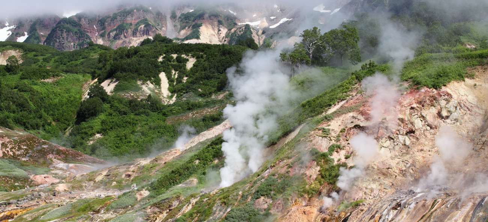
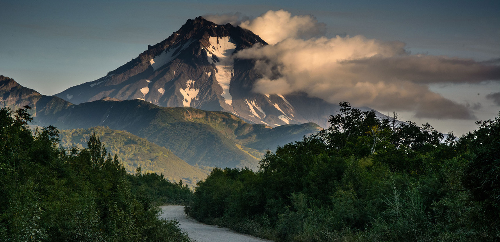

Что такое нейросеть
Грубо говоря, это сложная программа, состоящая из многих программ поменьше, которая может самостоятельно
учиться
разным вещам. Скажем, вы 50 раз показываете ей, как собирать пазлы c Белоснежкой, а новый, 51-й пазл, она
собирает сама. Примерно так же устроено и творчество нейросетей.
Недавно, например, нейросеть научилась
писать песни в стиле Егора Летова. Программа проанализировала корпус
текстов «Гражданской обороны», выделила закономерности и на их основе составила собственные произведения.
Подробнее о нейросетях можно почитать в наших карточках.
Дорога
Вечером второго дня я свернул в деревню Мшага под Великим Новгородом. Там я тоже нашёл заброшенный дом.
Правда, местные жители пытались отговорить меня от того, чтобы ночевать в нём — потому что дом обрушивается.
Но я не послушался и всё равно там спал. Вечером перед сном ко мне пришла женщина из деревни и принесла мне
еду — гречку с котлетами, огурцы и помидоры. Я поел, почистил кровать, которая там стояла, постелил на неё
спальный мешок и заснул.
Вдоль трассы М10 очень много мёртвых или полумёртвых деревень, где очень легко найти пустующий дом для
ночлега
После того как я проехал Великий Новгород, дожди закончились, началась жара. На третий день я сильно сгорел
и каждый день сгорал ещё сильнее — солнце припекало по свежим ожогам. Впрочем, к концу путешествия я к
солнцу совсем привык.
Источники и гейзеры Камчатки
Поселок Малки

Малки – поселок в 132 км от Петропавловска-Камчатского. По местный меркам, далековато, поэтому если уж
ехать,
то, как минимум, на пару дней. А ехать, конечно, стоит. Малки – настоящий местный спа с горячими источниками
посреди потрясающей красивой дикой природы.
Налычевская долина

Налычевская долина — народное название природного парка «Налычево». Со всех сторон она окружена вулканами,
которые защищают долину от сильного ветра. В сезон здесь очень много грибов и ягод и погода стоит очень
теплая,
но я особенно люблю Налычевскую долину зимой.
Паратунка

Поселок Паратунка – санаторно-курортная зона с малоосвоенным туристско-рекреационным потенциалом. Паратунка
славится своими термальными источниками, лечебной грязью, и прочими бальнеологическими возможностями!